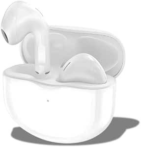

Fone de Ouvido Bluetooth Sem Fio Vale a Pena? Análise Completa do Campeão de Custo-Benefício

1. Introdução: Para quem este fone é indicado?
Nos últimos anos, o mercado de áudio passou por uma verdadeira revolução silenciosa. Os fones de ouvido com fios, antes onipresentes, perderam espaço para a tecnologia TWS (True Wireless Stereo). Entre tantas opções disponíveis no mercado nacional, encontrar um modelo de fone de ouvido bluetooth sem fio que consiga entregar áudio de qualidade, bateria duradoura e conexão firme sem cobrar uma fortuna virou o grande desafio do consumidor moderno.
Este modelo específico é ideal para pessoas que buscam o chamado custo-benefício inteligente. Seja para estudantes que precisam de isolamento passivo de ruído durante sessões longas de leitura, trabalhadores em home office que demandam microfones confiáveis para reuniões online diárias, ou esportistas que necessitam de estabilidade física e proteção básica contra suor durante os treinos.
Se você se cansa de fones que descarregam em menos de três horas, que falham ao colocar o celular no bolso da calça ou que machucam a cartilagem da orelha após trinta minutos de uso, esta análise detalhada vai esclarecer se este fone de ouvido é o investimento correto para o seu dia a dia.
"Fones sem fio deixaram de ser itens de luxo para virar ferramentas cruciais de foco, produtividade e entretenimento diário. A escolha correta poupa não apenas dinheiro, mas também idas e vindas com produtos descartáveis."
2. Principais Características e Especificações Técnicas
Para entender o desempenho de um fone, precisamos primeiro olhar para os componentes sob a carcaça de plástico. A engenharia sonora deste modelo foi pensada para extrair a máxima eficiência de energia e fidelidade acústica dentro de sua faixa de preço.
- Versão do Bluetooth 5.3: Garante latência ultrabaixa para vídeos e jogos, estabilidade de pareamento em raios de até 10 metros sem barreiras e consumo energético inteligente.
- Drivers Dinâmicos de 10mm: Construídos com diafragma de material composto, esses drivers são ligeiramente maiores que a média do mercado (que costuma usar 7.2mm ou 8mm), resultando em graves mais encorpados e dinâmicos.
- Autonomia da Bateria: Até 8 horas contínuas de reprodução nos fones e mais 22 horas adicionais fornecidas pelo estojo de carregamento inteligente, totalizando até 30 horas de uso livre de tomadas.
- Proteção IPX5: Resistência certificada contra jatos d'água de baixa pressão e suor. Perfeito para corridas sob garoa leve e treinos intensos na academia.
- Codec de Áudio Suportado: Compatível com codecs SBC (padrão universal) e AAC (formato de alta compressão amplamente utilizado por dispositivos iOS para entrega de áudio mais limpo).
- Conectividade Tipo-C: Entrada padrão moderna de carregamento rápido. Com apenas 10 minutos na tomada, você obtém até 1 hora de bateria para emergências.
3. Benefícios Reais no Uso Prático
Ir além da ficha técnica significa analisar como esses dados se convertem na vida real. Em testes práticos de uso contínuo, a ergonomia do formato in-ear (intra-auricular) se destacou bastante. A presença de três tamanhos diferentes de ponteiras de silicone na caixa (P, M e G) permite um ajuste vedado perfeito para diferentes canais auditivos.
O Som no Dia a Dia
Ao reproduzir listas focadas em graves, como gêneros eletrônicos e hip-hop, o driver de 10mm demonstra força. O som não distorce mesmo em volumes próximos de 85%, apresentando um palco sonoro limpo. Frequências médias, responsáveis pela voz em podcasts e videoaulas, mantêm-se destacadas na mixagem, sem que o instrumental as abafe.
Estabilidade e Conectividade
O chip Bluetooth 5.3 resolve um problema crônico dos fones antigos: a perda de sincronia entre os lados esquerdo e direito. O pareamento com o celular ocorre de forma quase instantânea ao abrir a tampa do estojo. Em trânsito pelas grandes cidades, com alta interferência eletromagnética de antenas e outros celulares, o fone manteve a conexão ininterrupta.
4. Análise Sincera: Pontos Positivos e Negativos
Nenhuma análise técnica é confiável se apontar apenas virtudes. Para ajudar na sua tomada de decisão consciente, listamos o que há de melhor e o que deixa a desejar neste produto.
Pontos Positivos (Prós)
- Autonomia excelente de bateria (até 30h totais).
- Graves profundos graças ao driver dinâmico de 10mm.
- Conexão Bluetooth estável e rápida.
- Resistência ao suor de verdade (Proteção IPX5).
- Carregamento rápido via porta USB-C moderna.
Pontos Negativos (Contras)
- Não possui Cancelamento Ativo de Ruído (ANC).
- Controles por toque podem ser sensíveis ao ajustar o fone.
- Estojo de recarga é de plástico leve e risca com facilidade.
- Microfone pode captar ruídos externos altos em ligações de rua.
5. Comparação Detalhada com Similares de Mercado
Para contextualizar este produto no mercado, criamos uma tabela comparativa com opções populares e amplamente conhecidas no Brasil:
| Especificação | Este Modelo (TWS) | Modelo de Entrada Genérico | Modelo Intermediário de Marca |
|---|---|---|---|
| Bluetooth | Versão 5.3 (Mais Recente) | Versão 5.0 ou 5.1 | Versão 5.2 |
| Bateria Total | Até 30 horas | Cerca de 12 a 15 horas | Cerca de 24 a 28 horas |
| Driver de Som | 10mm Dinâmico | 7.2mm Comum | 8mm Dinâmico |
| Proteção de Água | IPX5 (Resiste a jatos d'água) | Sem proteção declarada | IPX4 (Resiste a respingos) |
| Custo-Benefício | Excelente / Alto Valor | Baixo (Estraga Fácil) | Médio (Preço Premium) |
Como visto na comparação, este fone se posiciona como um forte competidor. Ele supera os modelos genéricos mais baratos em durabilidade e tecnologia de transmissão, e rivaliza de frente com marcas consagradas sem repassar o custo inflado de marketing para o consumidor final.
6. Cenários de Uso: Quando vale a pena investir?
Para consolidar seu entendimento, vamos a cenários cotidianos que mostram onde o fone realmente brilha:
Cenário 1: Trabalho e Foco Dinâmico. Se você passa o dia mudando de tarefas no computador e precisa atender ligações rápidas no celular, a velocidade de pareamento do Bluetooth 5.3 poupa segundos preciosos de estresse tecnológico.
Cenário 2: Atividade Física e Academias. Durante treinos de alta intensidade ou corridas de rua, a fixação intra-auricular firme impede que os fones caiam. O suor excessivo não danifica o circuito eletrônico interno graças à excelente vedação IPX5.
Cenário 3: Consumo de Mídia em Deslocamento. Para viagens diárias de transporte público, a autonomia prolongada evita a frustração de ficar sem som no meio do trajeto. O isolamento acústico passivo proporcionado pelas borrachas de silicone abafa de maneira natural o barulho do ambiente externo.
7. Perguntas Frequentes (FAQ)
8. Veredito: Nossa Recomendação Sincera
Se você procura um fone sem fio para uso constante e quer fugir de produtos descartáveis que param de funcionar em poucos meses, este modelo é uma das opções mais consistentes disponíveis na atualidade.
Ele não tenta competir com fones de grife que custam dez vezes o seu valor, mas constrói sua força onde realmente importa: estabilidade extrema de sinal, bateria para cobrir um dia inteiro de tarefas fora de casa, resistência física aos treinos e um som rico em graves. Aprovamos e recomendamos fortemente como uma compra segura e sem arrependimentos.
Garanta Seu Fone de Ouvido com Segurança
Compre diretamente na loja oficial da Amazon Brasil com garantia total do consumidor, frete super rápido e excelentes condições de parcelamento.
Ver Preço na Amazon Oficial